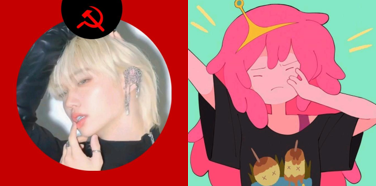

✨🌱Nosotros🌱✨
Bienvenid@ a nuestra página web. Mi nombre es Laura y este es un espacio para ayudar a otras personas a comenzar una dieta a base de plantas, en el proceso de ser vegan. Por diversas razones aún no tengo la oportunidad de empezar este tipo de dieta, pero igual, comencé a disminuir el consumo de productos de origen anymal.
Este espacio es inspirado por 2 personas a las que quiero mucho; Aleister (ifelixecofem en tiktok) y Miffi (miffi_ecofem en tiktok) (gracias por cuestionar mi especismo <3). Busco permitir a personas que no habían tenido la oportunidad, comenzar una dieta a base de plantas (a pesar de que el veganismo no es solo esto). Todo lo que hago aquí, es respetuoso con los anymales: nada de lácteos, huevo, carne, miel o cosas relacionadas de origen anymal
Inicio -
Nosotros -
Servicios -
Veganismo -
Contáctenos
Copyright 2021© Colegio Cafam